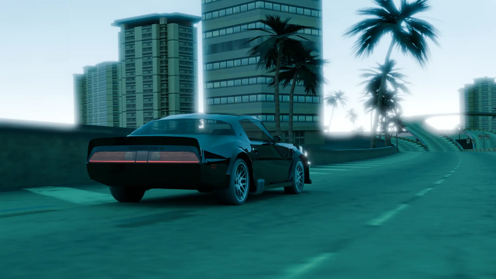
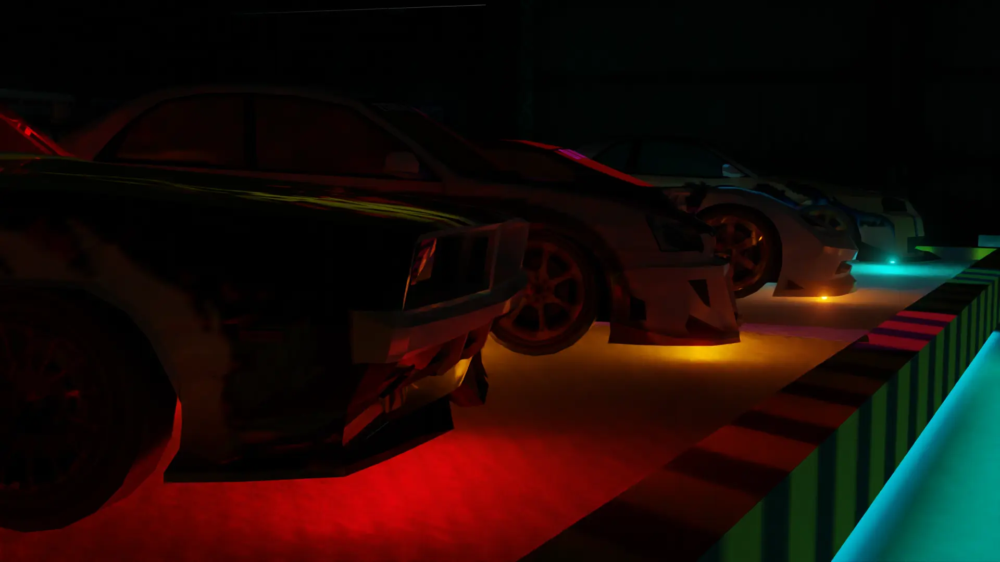
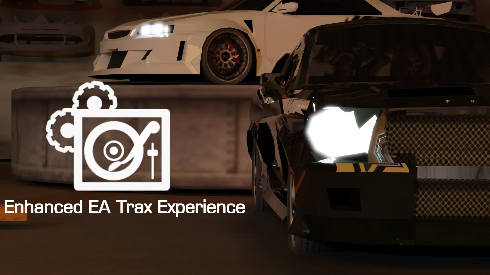
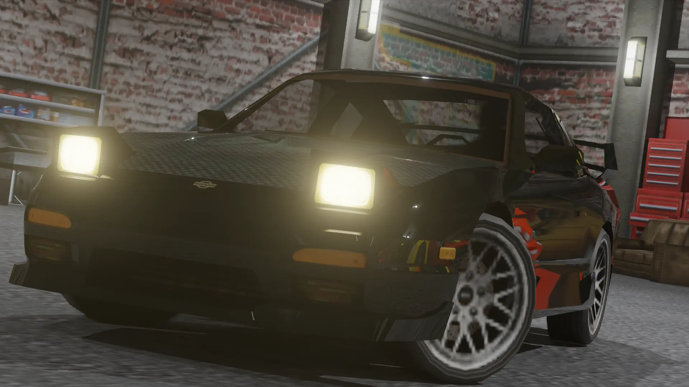
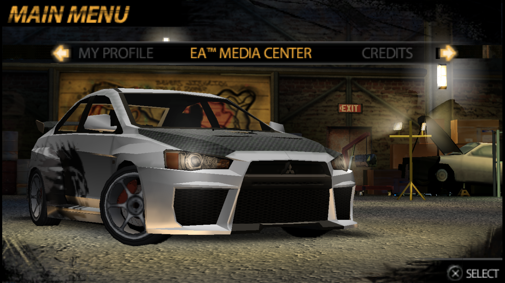

Map & car conversion from Undercover to OTC , apply with DeltaPatcher
Download
Uncensored and ported over songs from other speed engine PSP ports excluding prostreet
Download
Expanded playlists and higher quality soundtrack samples for the tracklist and more check the readme.
Download
Replaced all tracks with higher quality samples & replaced songs with the mainline game exlcusives
Download
Restores the garage model from OTC to undercover + uncensored music
Download